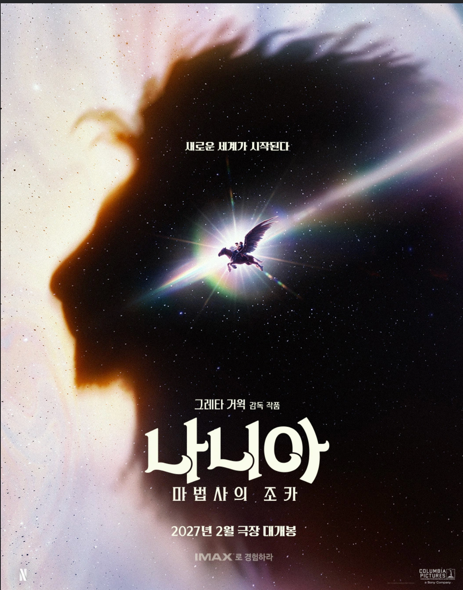

그레타 거윅 감독의 2억 8천만 달러 규모 영화 '나니아'가 시사회 후 넷플릭스 내부에서 우려를 불러일으키고 있는 것으로 알려졌습니다.
시사회를 마친 관계자들은 영화를 "끔찍하다"고 평했습니다.
이러한 우려 속에 재촬영이 진행되었다고 합니다.
"위대한 사자 '아슬란' 역의 성우로 여성 배우인 메릴 스트립이 논의 및 캐스팅되었다는 소식이 전해지면서, "
"아슬란을 여성화하거나 원작의 중후한 정체성을 지나치게 변형하는 것 아니냐는 우려가 제기되었습니다."
"원작 소설과 기존 영화에서 아슬란의 성별은 수컷(남성/사자)입니다. "
"리암 니슨이 나니아 연대기 기존3부작에서 깊고 중후하고 온화하현서 용맹한 아슬란의 목소리를 맡았고 호평받았습니다."
제작진이 "나니아에 대한 매우 새로운 해석이 될 것"이라고 밝히면서,
원작의 고전적인 판타지 분위기와 기독교적 메타포를 훼손하고 지나치게 현대적인 PC(정치적 올바름) 관점이나,
감독 개인의 스타일로만 재해석할지 모른다는 팬들의 걱정이 이어지고 있습니다.
제작 과정 중 흘러나온 일부 내부 관계자 및 초기 시사회 반응에서,
시각효과 미완성 등의 이유로 평가가 엇갈렸다는 소문이 돌면서 완성도에 대한 의구심을 자아내기도 했습니다.
극장개봉 2027.2
넷플릭스에서 공개 2027.4.2
하긴 스네이프도 흑인으로바꿨지참
요즘 ㅈ같게 만드는게 트렌드같음
내가 좋아하는 해리포터, 반지의제왕, 나니아 연대기 다 ㅈ박았네
아슬 아슬 하구만